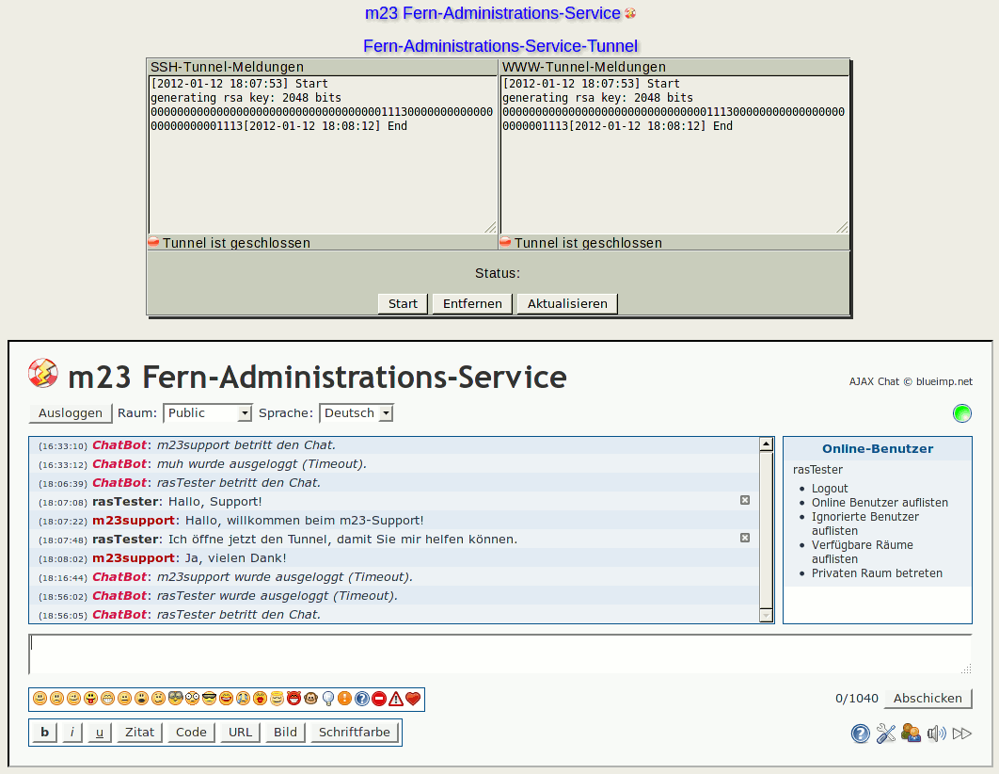

Nachdem Sie erfolgreich den Fern-Administrations-Service-Aktivierungsschlüssel importiert haben, können Sie nun die Tunnel für den Fern-Administrations-Service von goos-habermann.de aktivieren. Nach Aktivierung kann der Support von goos-habermann.de auf Ihren m23-Server zugreifen und Ihnen bei Ihren administrativen Tätigkeiten helfen. Der Support von goos-habermann.de hat, solange die Tunnel geöffnet sind, dieselben Rechte wie ein m23-Server-Administrator vor Ort.
Unter "Fern-Administrations-Service-Tunnel" sehen Sie den Status der beiden Tunnel (SSSH-Tunnel-Meldungen" und "WWW-Tunnel-Meldungen"). Um den Status zu aktualisieren, klicken Sie auf Äktualisieren".
Zum Öffnen der Tunnel-Verbindungen klicken Sie auf SStart", zum anschließenden Schließen auf SStop".
Möchten Sie den Fern-Administrations-Service nicht weiter in Anspruch nehmen, so können Sie mit einem Klick auf Ëntfernen" die Daten des Fern-Administrations-Service von Ihrem m23-Server löschen. Um den Service erneut zu nutzen, müssen Sie den Aktivierungsschlüssel wieder importieren.
dodger
2014-01-22